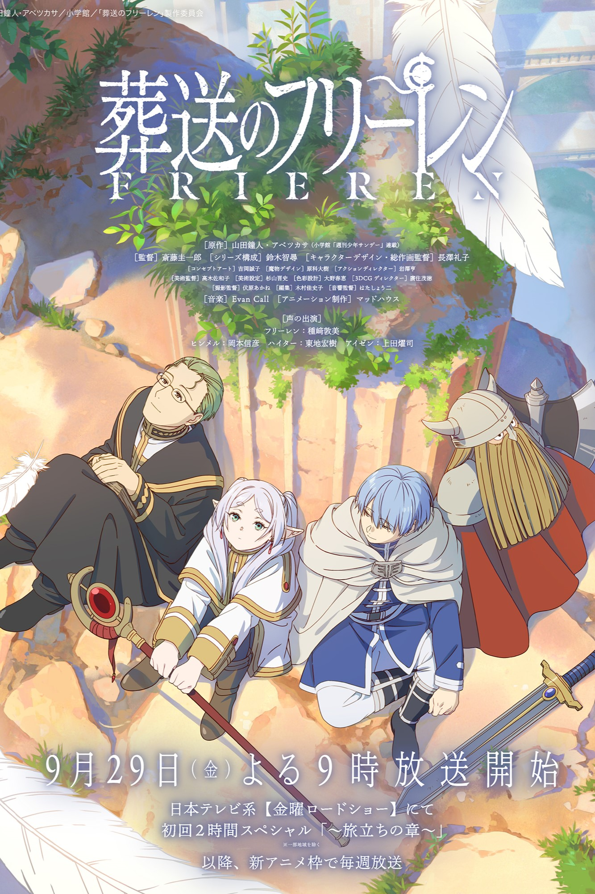

| 2023年動漫推薦 |
|
地獄樂 |
|
和山田談場Lv999的戀愛 |
_img/table_img4-3.jpg) |
鬼滅之刃 刀匠村篇 |
|
江戶時代末期，有最強的忍者之稱的畫眉丸因為同門的背叛而被捕，並遭幕府判處死刑，但不管怎麼樣對他處刑都無法將他殺死。某日，幕府直屬的處刑人山田淺右衛門佐切向畫眉丸提出了無罪釋放的條件，就是讓畫眉丸去有如極樂淨土的某座島上奪取「不老不死的仙藥」。畫眉丸為了與摰愛的妻子重逢，答應了此事，並將與同樣懷有此使命的多個死囚在島上展開競爭。
|
圍繞在女大生木之下茜和高中生山田秋斗之間，故事以茜的前男友劈腿網路遊戲的女玩家，而向她提出分手為開端。為了給前男友一個好看，茜賭氣參加遊戲的線下活動，卻也因此開啟了這場和山田的命運邂逅。 |
由於上弦之陸·墮姬和妓夫太郎被斬殺導致上弦的位置出現空缺，因此猗窩座和其他上弦成員都被無慘召喚到無限城內，無慘面對上弦在繼一百一十三年後再度出現空缺感到震怒，他認為上弦成員應該要盡心極力地找出「藍色彼岸花」和殲滅鬼殺隊的職責，於是無慘指派上弦之肆·半天狗和上弦之伍·玉壺前往某個地點去執行任務。
另一方面，在蝴蝶屋療傷長達兩個月的炭治郎得知鋼鐵塜不為自己重新鍛造出新刀的消息，因此他在蝴蝶屋的寺內清、中原澄與高田菜穗的建議下前往刀匠村，在那裡炭治郎遇到戀柱·甘露寺蜜璃和霞柱·時透無一郎以及不死川玄彌。然而，半天狗和玉壺由於找不到「藍色彼岸花」的緣故，他們決定潛入刀匠村企圖削弱鬼殺隊的攻擊戰力，因此炭治郎一行人的戰鬥即將開始。
|
|
|
我推的孩子 |
|
咒術迴戰 |
|
堀與宮村 -piece- |
|
雨宮吾郎是在鄉下地區工作的婦產科醫生，某天他的本命偶像星野愛出現在了他面前，吾郎錯愕地發現她身懷雙胞胎，幾經思量後決定接受愛懷孕的事實並且全力協助，但是吾郎在愛分娩前被人殺害，愛則生下一對龍鳳胎。當吾郎再次張開眼睛時，發現自己竟然轉生成為愛的其中一名孩子。同樣轉生為愛的孩子的是生前同為愛的粉絲、吾郎曾經關照過的患者天童寺紗理奈。
吾郎與紗理奈在這一世被愛分別命名為「星野愛久愛海」（阿奎亞）和「星野瑠美衣」（露比），並交由愛的所屬經紀公司「草莓娛樂」社長夫婦照顧，愛則持續以偶像身分在演藝圈中活躍，直到某天愛在自家住宅被粉絲刺殺身亡，阿奎亞與露比踏進並逐漸理解演藝圈殘酷生態的同時，也慢慢接近並發掘愛遇害事件背後的真相。
|
故事帶我們回到 2006
年，五條悟、夏油傑與家入硝子等人的青春校園生活，幾位重量級的一級咒術師都將以學生時期的青澀模樣出現，而究竟是什麼事情讓五條與夏油兩人漸行漸遠，《懷玉‧玉折》篇將會給出完整的解答。 |
堀在學校是個對誰都很溫柔、會打扮會化妝、很受大家歡迎的女孩子，但她私下其實是居家型的邋遢打扮，脾氣也超大。而宮村在學校被認為是個留長髮、在夏天還硬要穿長袖外套的臭宅男，但他其實是個耳洞穿超多、整身刺青、全身上下跟宅男搭不上邊的溫柔男生。
在偶然的情況下，他們發現了彼此的秘密，並因為幫對方保密而越走越近……。 |
|
|
殭屍100~在成為殭屍前要做的100件事 |
|
能幹貓今天也憂鬱 |
 |
葬送的芙莉蓮 |
|
天道輝是個在黑心企業公司任職三年的青年，原本過著被公司壓榨過勞而喪失熱情的生活，直至某天因為發現喪屍攻擊人類、延伸出失控的喪屍潮造成社會運作大亂，連原本的職場暗戀對象與鄰居也成為受害者，產生危機意識的同時決定列出死前最想完成的100個目標。以此事為機緣，天道輝陸續和生存者合作交流、與喪屍和不懷好意的生存者斡旋，同時尋求遏止殭屍病毒擴散的解決方案。
|
女主角福澤幸來是工作全能但生活廢柴的菁英
OL，在雪天撿到了一隻小黑貓，取名為福澤諭吉。原本諭吉的體型很普通，但看到即使住在垃圾屋裡仍舊幫牠打掃出一個溫暖小角落棲身的幸來，牠發覺這個人類更需要別人照顧…於是諭吉學習人類知識、打掃技能、烹飪技巧等，變成了一隻家事萬能的大貓貓
|
這是勇者一行人打倒魔王之後的故事。人類族的勇者欣梅爾、矮人族的戰士艾冉、人類族的僧侶海塔、精靈族的魔法使芙莉蓮，結束長達十年的冒險旅程，作為英雄凱旋歸來，並接受國王表揚。他們剛好遇上50年一遇的流星雨，四人組相約50年後再度相聚觀看難得一見的流星雨。但在芙莉蓮和昔日的冒險夥伴依約再會欣賞流星雨的當夜，夥伴的逝世讓長壽的芙莉蓮感受到生死無常，也讓芙莉蓮開始深入探討生命的意義。
|
|
|
進擊的巨人 the final season完結篇 |
|
SPY×FAMILY間諜家家酒（第2期） |
| 《進擊的巨人》Final Season
完結篇也在稍早公開了「後篇」的正式預告片！透過主角群之一的阿爾敏，以口白方式回憶過去與艾連、米卡莎等人的記憶，並在其中穿插了許多如兵長、約翰、萊納、亞妮（女巨人）及車力巨人等的畫面，雖然預告只有短短的 30
秒，但已經讓所有喜歡《進擊的巨人》的支持者非常期待。 |
為了緩和處於敵對關係的西國與東國之間的緊張局勢，隸屬西國情報機構的一流間諜「黃昏」奉命調查東國政治人物唐納文·戴斯蒙德之政治陰謀。然而，戴斯蒙德深居簡出，唯一會公開露面的場合只有其子所就讀的東國名校——伊甸學園舉辦的懇親會，因此只有讓「自己的小孩」進入伊甸學園就讀，並以家長的身份參加懇親會，才有機會與其接觸。黃昏為順利執行任務，以精神科醫生兼一家之主「洛伊德·佛傑」的身份掩人耳目，並於先後找到「女兒」安妮亞與「妻子」約兒組建起一個臨時家庭，殊不知安妮亞其實是有讀心能力的超能力者「實驗體007」；而看似溫柔善良的妻子，另一身份竟然是代號為「睡美人」的職業殺手。三人互相隱瞞真實身份，就此過起虛假的家庭生活。
|